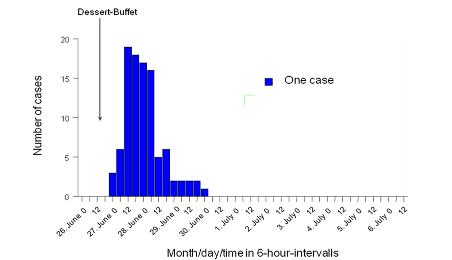
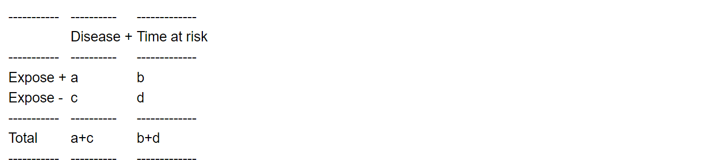
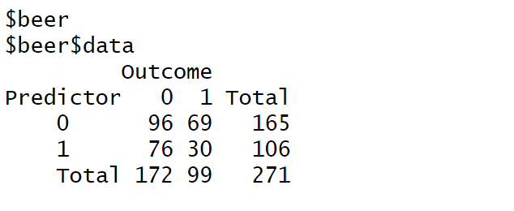

ebola_linelist %>%
filter(
age > 25,
district == "Bolo"
)An Outbreak of Gastroenteritis in Stegen, Germany (ENG)
Overview
| Case study characteristics | |
|---|---|
| Name: | An Outbreak of Gastroenteritis in Stegen, Germany |
| Language: | English |
| Tool: | R; |
| Location: | Germany |
| Scale: | Local |
| Diseases: | GI |
| Keywords: | GI; Stratified analysis; R |
| Technical complexity: | Intermediate |
| Methodological complexity: | Basic |
Authorship
Original authors: This case study was first designed by Alain Moren and Gilles Desve for EPIET. It is based on an investigation conducted by Anja Hauri, RKI, Berlin, 1998.
Data source: Data is fictional and was inspired by Nygren et al. Tick-borne encephalitis: acute clinical manifestations and severity in 581 cases from Germany, 2018-2020. Journal of Infection. 2023 Apr 1;86(4):369-75
Adapted and modified by: Alicia Barrasa (EPIET), Ioannis Karagiannis (Public Health England - PHE), Giri Shankar (Public Health Wales), Niklas Willrich (Robert Koch Institute-RKI), Patrick Keating (Austrian Agency for Health and Food Safety-AGES), Alexander Spina (AGES), Daniel Gardiner (PHE), Lukas Richter (AGES), Liese Van Gompel (MedEPIET), Kostas Danis (MedEPIET) and Alberto Mateo Urdiales (Istituto Superiore di Sanità - ISS)
Instructions
Getting Help
There are several ways to get help:
- Look for the “hints” and solutions (see below)
- Post a question in Applied Epi Community with reference to this case study
Hints and Solutions
Here is what the “helpers” look like:
Click to read a hint
Here you will see a helpful hint!
Click to see the solution
Here is more explanation about why the solution works.
Posting a question in the Community Forum
… description here about posting in Community… TO BE COMPLETED BY APPLIED EPI
Terms of Use
Disclaimer: The information presented in this exercise and the associated data files have been deliberately changed so as to facilitate the acquisition of the learning objectives for fellows of EPIET, EUPHEM and EPIET-associated programmes. This case study was first introduced in 2022 (see Copyright and Licence agreement for more information).
You are free:
- to Share: to copy and distribute the work
- to Remix: to adapt and build upon the material
Under the following conditions:
Attribution: You must attribute the work in the manner specified by the author or licensor (but not in any way that suggests that they endorse you or your use of the work). The best way to do this is to keep as it is the list of contributors: sources, authors and reviewers.
Share Alike: If you alter, transform, or build upon this work, you may distribute the resulting work only under the same or similar license to this one. Your changes must be documented. Under that condition, you are allowed to add your name to the list of contributors.
Notification: If you use the work in the manner specified by the author or licensor, Walter@rki.de
You cannot sell this work alone but you can use it as part of a teaching.
With the understanding that:
Waiver: Any of the above conditions can be waived if you get permission from the copyright holder.
Public Domain: Where the work or any of its elements is in the public domain under applicable law, that status is in no way affected by the license.
-
Other Rights: In no way are any of the following rights affected by the license:
Your fair dealing or fair use rights, or other applicable copyright exceptions and limitations;
The author’s moral rights;
Rights other persons may have either in the work itself or in how the work is used, such as publicity or privacy rights.
Notice: For any reuse or distribution, you must make clear to others the license terms of this work by keeping together this work and the current license.
This licence is based on http://creativecommons.org/licenses/by-sa/3.0/
Feedback & suggestions
- You can write feedback and suggestions on this case study at the GitHub issues page
- Alternatively email us at: contact@appliedepi.org
Version and revisions
Write date of first version
Write any revisions made to the case study
| Date | Changes made | Author |
|---|---|---|
| 2015 | The case study has been divided in two parts: the first includes descriptive, univariable and stratified analysis as pre-module homework; the second includes logistic and binary regression (not shown here). Unnecessary toponymes were removed. | Alicia Barrasa (EPIET) and Ioannis Karagiannis (Publich Health England-PHE) |
| 2017 | Questions were rephrased to reflect real life scenarios (rather than academic exercise) | Alicia Barrasa (EPIET) and Giri Shankar (Public Health Wales-PHW) |
| 2017 | The case study was adapted to include the help on R | Niklas Willrich (Robert Koch Institute-RKI), Patrick Keating (Austrian Agency for Health and Food Safety-AGES) and Alexander Spina (AGES) |
| 2017 | Contribution to the R code | Daniel Gardiner (Public Health England-PHE) and Lukas Richter (AGES) |
| 2022 | Minor revisions to the R code and explanations | |
| 2023 | Major revision of the R code. R code was simplified and R tidyverse code was implemented | Liese Van Gompel (MedEPIET) |
| 2024 | Revision of the R code, i.e. use of EpiStas package for univariable and multivariable analysis, simplification and harmonisation of the R code | Kostas Danis (MediPIET) |
| 2017 | Revision of content, structure, R code and adaptation of format to Applied Epi’s template of case studies | Alberto Mateo Urdiales (ISS) |
Guidance
Objectives of this case study
At the end of this case study, participants should:
know and be able to perform the fundamental steps of a descriptive statistical analysis of a foodborne outbreak (including quantitative assessment (frequency distributions, missing values, means/medians/modes, quartiles/SDs) and visualization of the data (histogram, boxplot))
be able to perform univariate statistical analysis to identify potential vehicles of a foodborne outbreak (including risk ratios and/or odds ratios, depending on the design)
know why and how stratification can be conducted in datasets related to an outbreak investigation
be able to conduct a stratified analysis with respect to potential risk factors and confounders/effect modifiers
Previous level of expertise assumed
Participants are expected to be familiar with data management and basic analysis in R.
Preparation for the case study
Download folder named stengen_mva and extract contents in the local laptop
Create an Rstudio project in the folder stengen_mva If you are unsure on how to do that, read the EpiRhandbook Chapter on R projects
Inside the folder stengen_mva: Subfolder “data” contains a raw data file named tira.csv. This is the only data file you will use in this case study. In the same folder you can find the data dictionary with a description of the dataframe variables.
Subfolder scripts should be used to save any scripts related to the analysis. Inside “backup” you will find a solution script with the code of the case study named stengen_analysis_backup.R.
Subfolder “outputs” could be used to store all outputs (tables, graphs, documents) that are the result of the analysis
Part 1 - Scenario, study design and analysis plan
Introduction
On 26 June 1998, the St Sebastian High School in Stegen (school A), Germany, celebrated a graduation party, where 250 to 350 participants were expected. Attendees included graduates from that school, their families and friends, teachers, 12th grade students and some graduates from a nearby school (school B).
A self-service party buffet was supplied by a commercial caterer in Freiburg. Food was prepared on the day of the party and transported in a refrigerated van to the school.
Festivities started with a dinner buffet which opened from 8:30 pm onwards and were followed by a dessert buffet offered from 10 pm. The party and the buffet extended late during the night and alcoholic beverages were quite popular. All agreed it was a party to be remembered.
The alert
On 2nd July 1998, the Freiburg local health office reported to the Robert Koch Institute (RKI) in Berlin the occurrence of many cases of gastroenteritis following the graduation party described above. More than 100 cases were suspected among attendees and some of them were admitted to nearby hospitals. Sick people suffered from fever, nausea, diarrhoea and vomiting that lasted for several days. Most believed that the tiramisu consumed at dinner was responsible for their illness. Salmonella Enteritidis was isolated from 19 stool samples.
The Freiburg health office sent a team to investigate the kitchen facilities of the caterer. Food preparation procedures were reviewed. Food samples, except tiramisu (none was left over), were sent to the laboratory of Freiburg University. Microbiological analyses were performed on samples of the following: brown chocolate mousse, caramel cream, remoulade sauce, yoghurt dill sauce and 10 raw eggs.
The Freiburg health office requested help from the RKI in the investigation to assess the magnitude of the outbreak and identify potential vehicle(s) and risk factors for transmission in order to better control the outbreak.
The study
Cases were defined as any person who had attended the party at St Sebastian High School who suffered from diarrhoea (≥ 3 loose stool for 24 hours) between 27 June and 29 June 1998; or who suffered from at least three of the following symptoms: vomiting, fever ≥38.5°C, nausea, abdominal pain, and headache.
Students from both schools attending the party were asked through phone interviews to provide names of persons who attended the party.
Overall, 291 responded to enquiries and 103 cases were identified (attack rate: 35%). Among these cases, 84 (82%) received medical treatment and four were admitted to hospitals. Attack rates by age group were 36.6% for persons <20 years, 32.1% for persons 20 to 29 years, and 36.8% for persons older than 29 years.

QUESTION 1. What would be your hypothesis concerning the source of the outbreak?
Click to see the solution
The shape of the epidemic curve and the attendance to a single event (a buffet) pointed towards a foodborne outbreak related to a point source of infection.
QUESTION 2. What study design would you choose to test this hypothesis?
Click to see the solution
Using the updated list of attendants, a retrospective cohort study including all attendants to the party (that could be reached) was conducted. All had received a standard questionnaire asking for demographic information, signs, symptoms and duration, admission to hospital, and food and beverages consumption at the party including amount consumed. Food-specific attack rates were computed for more than 50 food items and beverages.
Question 3. What would your overall plan of analysis be?
Click to see the solution
Perform data cleaning
For each variable, look at the range, unexpected and missing values.
Correct data using the original forms used if needed
Describe each variable
For each variable, describe frequency distributions including missing values and, if needed, means, median, modes, quartiles, standard deviation, outliers
Make appropriate histograms and box plots
Choose relevant characteristics to describe the population
Identify the outbreak vehicle if any
Calculate food-specific attack rates
Look at the proportions of cases exposed
Chose the appropriate measure of association
Chose the appropriate statistical tests and significance level
Calculate the percentages of cases exposed to each exposure
Search for any dose-response relationship if appropriate
Interpret the results
Perform a stratified analysis
Identify the variables that are potential effect modifiers (EM) and confounders
Design appropriate stratification tables
Stratify on each level taken by the EM and confounders
Compute appropriate measurements to identify confounding and effect modification
Conduct appropriate statistical tests
Interpret the results
Perform a multivariable analysis
- This will be discussed during the module.
Part 2 - Descriptive, univariate and stratified analysis with R
Step 1: Set up
Step 1.1: Create a new R script
Once you have created an Rproject inside the “stengen_mva” folder (as specified in the second point of the section Preparation for the case study). Create a new script with the name stengen_analysis and save it in the subfolder “scripts”. If you are familiar with Rmarkdown, you may decide to use this type of file instead of a standard R script.
Step 1.2: Define R language
Depending on where you are and how you carried out R installation, your language “locale” might be different from the language of the graphs that you want to produce. For example, a french person might have a french “locale”. If that is the case, when creating a graph by day of the week, Monday will be displayed as “lundi”. If that french person wants to create an English report, as for this case study, the language “locale” should be changed.
Task: Ensure your “locale” is in English and change it into English if it is not. If you don’t know how to do this try finding it online (searching for online help is an important skill for R users!). Otherwise, see the solution below
Click to see a solution (try it yourself first!)
# To see your language locale
Sys.getlocale()
# To change it into English
Sys.setlocale("LC_ALL", "English")Step 1.3: Install/load packages
Install and load the following packages: rio, skimr, janitor, gtsummary, rstatix, epitools, epiR, epikit and tidyverse.
You can find more about installing/loading packages in the Packages section of the EpiRhandbook.
Click to read a hint
You may end up using a long list of packages. Unfortunately different packages have functions with the same name. For example, the package {dplyr} (already installed with {tidyverse}) has a function called select() which we frequently use to subset columns of a data frame. But other packages such as {MASS} do also have a function called select(). This could create headaches if you want to subset columns using dplyr’s select() but R thinks you’re calling MASS’s select() (we call this masking - dplyr::select() is masked by MASS::select()). Given that you are more likely to use functions from {tidyverse}, ensure that this is the last package in your p_load() list so that functions from {tidyverse} (including {dplyr} functions) will always “prevail”.
Click to see a solution (try it yourself first!)
# Ensures the package "pacman" is installed
if (!require("pacman")) {
install.packages("pacman") }
pacman::p_load(
rio, # to import datasets
skimr, # for displaying your data
janitor, # a package for data cleaning
gtsummary, # to create frequency tables
rstatix, # to generate summary statistics
epitools, # for univariable analysis
epikit, # for creating age categories
epiR, # for the adjusted risk ratios across strata
tidyverse # data management and visualization
)Step 2: Import and explore data
Step 2.1: Import the data
Task Import the data frame called “tira.csv” inside the “data” subfolder.
Click to read a hint
If you are working within a project, finding the path to the dataframe should be relatively straightfoward. A “.csv” file is a “Comma-separated Values” file. You can import this dataframe using the read.csv() which comes already pre-installed in R. However, we recommend that you use the import() function from {rio} because, as you may remember, this function will recognise the file type and import it whether the file is from R, Stata, excel or many others. If you have any doubts about importing review the Import and export chapter of the EpiRhandbook.
Click to see a solution (try it yourself first!)
# Import the dataset 'tira.csv'
tira_raw <- import("data/tira.csv") Step 2.2: Explore the data
Task: Explore the data trying to answer the following questions:
QUESTION: How many rows and columns does the dataframe have?
QUESTION: How many cases have ‘age’ missing?
QUESTION: What is the class of the column ‘salmon’?
QUESTION: What percentage of attendees ate tomato?
QUESTION: What is the class of the column ‘dateonset’?
QUESTION: How are missing categorised in the variables ‘salmon’, ‘horseradish’ and ‘pork’?
Click to read a hint
An efficient way to explore data is to use the function skim() from the {skimr} package, as it gives you all the information needed with only one command. Of course, there are several alternatives. You can also have a look at glimpse() from {dplyr}, for example. An easy way to explore single variables that have categories is to use tabyl() from {janitor}
Click to see a solution (try it yourself first!)
# Inspect your dataset and generate basic statistics using the skim function
skim(tira_raw)| Name | tira_raw |
| Number of rows | 291 |
| Number of columns | 20 |
| _______________________ | |
| Column type frequency: | |
| Date | 1 |
| numeric | 19 |
| ________________________ | |
| Group variables | None |
Variable type: Date
| skim_variable | n_missing | complete_rate | min | max | median | n_unique |
|---|---|---|---|---|---|---|
| dateonset | 160 | 0.45 | 1998-06-26 | 1998-07-09 | 1998-06-28 | 11 |
Variable type: numeric
| skim_variable | n_missing | complete_rate | mean | sd | p0 | p25 | p50 | p75 | p100 | hist |
|---|---|---|---|---|---|---|---|---|---|---|
| uniquekey | 0 | 1.00 | 146.00 | 84.15 | 1 | 73.5 | 146 | 218.5 | 291 | ▇▇▇▇▇ |
| ill | 0 | 1.00 | 0.35 | 0.48 | 0 | 0.0 | 0 | 1.0 | 1 | ▇▁▁▁▅ |
| sex | 0 | 1.00 | 0.52 | 0.50 | 0 | 0.0 | 1 | 1.0 | 1 | ▇▁▁▁▇ |
| age | 8 | 0.97 | 26.66 | 14.33 | 12 | 18.0 | 20 | 27.0 | 80 | ▇▁▂▁▁ |
| tira | 5 | 0.98 | 0.42 | 0.49 | 0 | 0.0 | 0 | 1.0 | 1 | ▇▁▁▁▆ |
| tportion | 5 | 0.98 | 0.67 | 0.90 | 0 | 0.0 | 0 | 1.0 | 3 | ▇▃▁▂▁ |
| wmousse | 14 | 0.95 | 0.26 | 0.44 | 0 | 0.0 | 0 | 1.0 | 1 | ▇▁▁▁▃ |
| dmousse | 4 | 0.99 | 0.39 | 0.49 | 0 | 0.0 | 0 | 1.0 | 1 | ▇▁▁▁▅ |
| mportion | 12 | 0.96 | 0.65 | 0.90 | 0 | 0.0 | 0 | 1.0 | 3 | ▇▂▁▂▁ |
| beer | 20 | 0.93 | 0.39 | 0.49 | 0 | 0.0 | 0 | 1.0 | 1 | ▇▁▁▁▅ |
| redjelly | 0 | 1.00 | 0.27 | 0.45 | 0 | 0.0 | 0 | 1.0 | 1 | ▇▁▁▁▃ |
| fruitsalad | 0 | 1.00 | 0.24 | 0.43 | 0 | 0.0 | 0 | 0.0 | 1 | ▇▁▁▁▂ |
| tomato | 0 | 1.00 | 0.29 | 0.45 | 0 | 0.0 | 0 | 1.0 | 1 | ▇▁▁▁▃ |
| mince | 0 | 1.00 | 0.30 | 0.46 | 0 | 0.0 | 0 | 1.0 | 1 | ▇▁▁▁▃ |
| salmon | 0 | 1.00 | 0.48 | 1.12 | 0 | 0.0 | 0 | 1.0 | 9 | ▇▁▁▁▁ |
| horseradish | 0 | 1.00 | 0.31 | 0.84 | 0 | 0.0 | 0 | 1.0 | 9 | ▇▁▁▁▁ |
| chickenwin | 0 | 1.00 | 0.29 | 0.45 | 0 | 0.0 | 0 | 1.0 | 1 | ▇▁▁▁▃ |
| roastbeef | 0 | 1.00 | 0.10 | 0.30 | 0 | 0.0 | 0 | 0.0 | 1 | ▇▁▁▁▁ |
| pork | 0 | 1.00 | 0.47 | 0.86 | 0 | 0.0 | 0 | 1.0 | 9 | ▇▁▁▁▁ |
# Glimpse is an alternative to skim which gives more accurate information about the nature of the variables
glimpse(tira_raw)Rows: 291
Columns: 20
$ uniquekey <int> 210, 12, 288, 186, 20, 148, 201, 106, 272, 50, 216, 141, 9~
$ ill <int> 1, 1, 1, 1, 1, 1, 1, 1, 1, 1, 1, 1, 1, 1, 1, 1, 1, 1, 1, 1~
$ dateonset <IDate> 1998-06-27, 1998-06-27, 1998-06-27, 1998-06-27, 1998-06-~
$ sex <int> 1, 0, 1, 0, 1, 0, 0, 0, 1, 0, 1, 0, 0, 1, 0, 0, 0, 0, 1, 1~
$ age <int> 18, 57, 56, 17, 19, 16, 19, 19, 40, 53, 20, 23, 17, 19, 15~
$ tira <int> 1, 1, 0, 1, 1, 1, 1, 1, 1, 1, 1, 1, 1, 1, 1, 1, 1, 1, 1, 1~
$ tportion <int> 3, 1, 0, 1, 2, 2, 3, 2, 2, 1, 3, 2, 1, 1, 1, 2, 1, 2, 2, 2~
$ wmousse <int> 0, 0, 0, 1, 0, 1, 0, 1, 1, 1, 1, 1, 0, 0, 1, 0, 0, 1, 0, 0~
$ dmousse <int> 1, 1, 0, 0, 0, 1, 1, 1, 1, 1, 1, NA, 1, 0, 1, 0, 1, 1, 1, ~
$ mportion <int> 1, 1, 0, NA, 0, 1, 1, 1, 2, 1, 3, 1, 1, 0, 2, 0, 1, 2, 2, ~
$ beer <int> 0, 0, 0, 0, 1, 0, 0, 0, 1, 0, 1, 0, 1, 0, 0, 0, 0, 0, NA, ~
$ redjelly <int> 0, 0, 0, 1, 0, 0, 0, 1, 0, 1, 1, 1, 1, 0, 0, 1, 1, 0, 1, 1~
$ fruitsalad <int> 0, 1, 0, 0, 0, 1, 1, 1, 0, 0, 1, 1, 0, 0, 1, 1, 1, 0, 0, 1~
$ tomato <int> 0, 0, 1, 0, 0, 0, 0, 0, 1, 0, 1, 0, 1, 0, 1, 0, 0, 0, 1, 0~
$ mince <int> 0, 1, 1, 0, 0, 1, 0, 0, 0, 0, 0, 1, 1, 0, 0, 0, 1, 0, 0, 0~
$ salmon <int> 0, 1, 1, 9, 0, 1, 0, 0, 1, 1, 1, 0, 0, 0, 0, 1, 1, 0, 1, 0~
$ horseradish <int> 0, 1, 0, 0, 0, 0, 0, 1, 0, 1, 1, 1, 0, 0, 0, 1, 0, 0, 0, 0~
$ chickenwin <int> 0, 0, 0, 0, 0, 1, 0, 1, 0, 1, 0, 0, 1, 0, 0, 0, 0, 0, 1, 0~
$ roastbeef <int> 0, 0, 0, 0, 0, 0, 0, 0, 1, 0, 0, 0, 0, 0, 0, 0, 0, 0, 0, 0~
$ pork <int> 1, 0, 0, 9, 0, 0, 0, 0, 0, 0, 1, 1, 1, 1, 1, 0, 1, 0, 1, 0~# To see the different categories of the variables
tabyl(tira_raw, tomato)| tomato | n | percent |
|---|---|---|
| 0 | 208 | 0.7147766 |
| 1 | 83 | 0.2852234 |
Step 2.3: Explore age in more detail
Task Explore the age of attendees by:
Getting summary statistics
Generating a boxplot of age by illness status.
Click to read a hint
You can create a boxplot with {ggplot2} by using the geom geom_boxplot(). In order to create two boxes, one for each illness status, you can assign in the aesthetics the column ill to both the x-axis and the fill. Don’t worry if it doesn’t look good right now….it should look like the solution below. If you need a refresher on how ggplot works, have a look at the EpiRhandbook Chapter
Click to see a solution (try it yourself first!)
## Generate summary statistics
summary(tira_raw$age) Min. 1st Qu. Median Mean 3rd Qu. Max. NA's
12.00 18.00 20.00 26.66 27.00 80.00 8 ### Creating a boxplot of age by illness status
boxplot_age <- tira_raw %>%
ggplot(mapping = aes(x = ill,
y = age,
fill = ill)) +
geom_boxplot() +
labs(
title = "Boxplot: Age distribution per illness status",
x = "Disease status",
y = "Age",
fill = "Illness (0=No;1=Yes)"
) +
theme_bw()
boxplot_ageWarning: Continuous x aesthetic
i did you forget `aes(group = ...)`?Warning: Removed 8 rows containing non-finite values (`stat_boxplot()`).Warning: The following aesthetics were dropped during statistical transformation: fill
i This can happen when ggplot fails to infer the correct grouping structure in
the data.
i Did you forget to specify a `group` aesthetic or to convert a numerical
variable into a factor?
QUESTION: Which group (ill or not ill) has more variation around age’s median?
We were not able to create the boxplot that we aimed for. In fact, you can see that a warning message appeared in your console saying: “Did you forget to specify a group aesthetic or to convert a numerical variable into a factor?”
Looks like all columns that consist of 1 (present) and 0 (absent) values are of class ‘integer’, including “ill”. Integer means that they are considered numbers. However, we want them to be categories, otherwise we won’t be able to carry out many of the analysis we want (including this boxplot). So, now we’ll sort this out alongside other cleaning operations.
Step 3: Clean the data
Step 3.1: Transform categorical variables
Task: Change all present (1) / absent (0) variables from integer to factors. Do the same for the variables that record the number of portions eaten.
Click to read a hint
You can do this one by one, or you could do all at the same time using the across() function from {dplyr}. If you are not sure how to use the across() function, read the section on Transform multiple columns from the EpiRhandbook.
Click to see a solution (try it yourself first!)
tira_clean <- tira_raw %>% # tira_clean will be out clean dataframe after we have performed cleaning tasks on tira_raw
# this would be changing one-by-one the columns into factors
mutate(ill = as.factor(ill)) %>%
# this would change all columns we are interested into 'factors' in only one command
mutate(across(.cols = !c(uniquekey, dateonset, age), # with the exclamation mark before c() we are telling R that we want all columns, except those in the c() list, to be transformed into factors
.fns = ~ as.factor(.x)))
# Check that the changes have been succesful
glimpse(tira_clean)Rows: 291
Columns: 20
$ uniquekey <int> 210, 12, 288, 186, 20, 148, 201, 106, 272, 50, 216, 141, 9~
$ ill <fct> 1, 1, 1, 1, 1, 1, 1, 1, 1, 1, 1, 1, 1, 1, 1, 1, 1, 1, 1, 1~
$ dateonset <IDate> 1998-06-27, 1998-06-27, 1998-06-27, 1998-06-27, 1998-06-~
$ sex <fct> 1, 0, 1, 0, 1, 0, 0, 0, 1, 0, 1, 0, 0, 1, 0, 0, 0, 0, 1, 1~
$ age <int> 18, 57, 56, 17, 19, 16, 19, 19, 40, 53, 20, 23, 17, 19, 15~
$ tira <fct> 1, 1, 0, 1, 1, 1, 1, 1, 1, 1, 1, 1, 1, 1, 1, 1, 1, 1, 1, 1~
$ tportion <fct> 3, 1, 0, 1, 2, 2, 3, 2, 2, 1, 3, 2, 1, 1, 1, 2, 1, 2, 2, 2~
$ wmousse <fct> 0, 0, 0, 1, 0, 1, 0, 1, 1, 1, 1, 1, 0, 0, 1, 0, 0, 1, 0, 0~
$ dmousse <fct> 1, 1, 0, 0, 0, 1, 1, 1, 1, 1, 1, NA, 1, 0, 1, 0, 1, 1, 1, ~
$ mportion <fct> 1, 1, 0, NA, 0, 1, 1, 1, 2, 1, 3, 1, 1, 0, 2, 0, 1, 2, 2, ~
$ beer <fct> 0, 0, 0, 0, 1, 0, 0, 0, 1, 0, 1, 0, 1, 0, 0, 0, 0, 0, NA, ~
$ redjelly <fct> 0, 0, 0, 1, 0, 0, 0, 1, 0, 1, 1, 1, 1, 0, 0, 1, 1, 0, 1, 1~
$ fruitsalad <fct> 0, 1, 0, 0, 0, 1, 1, 1, 0, 0, 1, 1, 0, 0, 1, 1, 1, 0, 0, 1~
$ tomato <fct> 0, 0, 1, 0, 0, 0, 0, 0, 1, 0, 1, 0, 1, 0, 1, 0, 0, 0, 1, 0~
$ mince <fct> 0, 1, 1, 0, 0, 1, 0, 0, 0, 0, 0, 1, 1, 0, 0, 0, 1, 0, 0, 0~
$ salmon <fct> 0, 1, 1, 9, 0, 1, 0, 0, 1, 1, 1, 0, 0, 0, 0, 1, 1, 0, 1, 0~
$ horseradish <fct> 0, 1, 0, 0, 0, 0, 0, 1, 0, 1, 1, 1, 0, 0, 0, 1, 0, 0, 0, 0~
$ chickenwin <fct> 0, 0, 0, 0, 0, 1, 0, 1, 0, 1, 0, 0, 1, 0, 0, 0, 0, 0, 1, 0~
$ roastbeef <fct> 0, 0, 0, 0, 0, 0, 0, 0, 1, 0, 0, 0, 0, 0, 0, 0, 0, 0, 0, 0~
$ pork <fct> 1, 0, 0, 9, 0, 0, 0, 0, 0, 0, 1, 1, 1, 1, 1, 0, 1, 0, 1, 0~Step 3.2: Categorise “missing” as NA
We saw with the skim() overview -and in the data dictionary- that the variables salmon, pork and horseradish have ‘missing’ codified with number ‘9’. In most analysis and visualisations, it is very important that R considers missing data truly as “missing”. To do that, missing data needs to be coded as NA (without quotes). Other codifications of missing data, such as empty spaces or the number 9 (as in this case) will mean that R will treat this data as a category or a number. For R, 9 is not different from number 1.
Task Recode the columns salmon, pork and horseradish so that values of 9 are coded as NA. Add the new code to the cleaning pipeline initiated in the previous step
Click to read a hint
For this task you can use the mutate() function in combination with recode() or if_else(). The former is used specifically for recoding, whereas the latter is used to create/modify columns based on logical conditions. In any case, functions like if_else() and recode() may require you to specify the type of NA (e.g., NA_character_, NA_real_, NA_integer_) to ensure that the resulting vector maintains a consistent data type. This is important because R is strongly typed, meaning that each vector must contain elements of the same type. If you want to know more about recoding, read the EpiRhandbook section on Recoding. Regardless of the approach that you choose, add it to the cleaning pipe command you started before, so that your code is tidy.
Click to see a solution (try it yourself first!)
tira_clean <- tira_raw %>% # tira_clean will be out clean dataframe after we have performed cleaning tasks on tira_raw
# this would be changing one-by-one the columns into factors
mutate(ill = as.factor(ill)) %>%
# this would change all columns we are interested into 'factors' in only one command
mutate(across(.cols = !c(uniquekey, dateonset, age), # with the exclamation mark before c() we are telling R that we want all columns, except those in the c() list, to be transformed into factors
.fns = ~ as.factor(.x))) %>%
# we can do all columns at the same time with across(). Here we use recode for this example
mutate(across(.cols = c(salmon, horseradish, pork), .fns = ~ recode(.x, "9" = NA_character_)))
# Check that the changes have been succesful
tabyl(tira_clean, pork)| pork | n | percent | valid_percent |
|---|---|---|---|
| 0 | 169 | 0.5807560 | 0.5847751 |
| 1 | 120 | 0.4123711 | 0.4152249 |
| NA | 2 | 0.0068729 | NA |
Step 3.3: Re-categorise mousse and tiramisu portions
We saw that there are two columns -tportion and mportion- that have four categories according to the number of portions eaten. However, exploring these columns we can see that few people ate 3 portions. The low number in this category means that it will be very difficult to have meaningful results due to the wide uncertainty that we’ll find in the estimates.
Task: Re-categorise these columns so that they have three categories: 0,1 and 2+ portions eaten. Add the new code to the cleaning pipeline initiated previously.
Click to read a hint
We will now use the mutate() function in combination with if_else(). As specified above, this function is used for simple logical recoding, which is what we want to do now. There are three “partner” functions called if_else() from {dplyr}, ifelse() from {base} and fifelse() from {data.table}. They all have the same syntax. ifelse() has the advantage of being embedded in R, which guarantees its stability and sustainability. if_else() has some advantages compared to ifelse() that are important in epi analysis. For example, it does not convert Date objects to numeric (which can be a headache) and verifies that both alternatives in the if and else statements are of the same class. Finally, fifelse() is the fastest, so it has its advantages when we’re analysis a large database.
If you want to know more about simple logical recoding, have a look at the dedicated section of the EpiRhandbook.
Click to see a solution (try it yourself first!)
#Check portion before
tabyl(tira_clean, tportion)| tportion | n | percent | valid_percent |
|---|---|---|---|
| 0 | 165 | 0.5670103 | 0.5769231 |
| 1 | 65 | 0.2233677 | 0.2272727 |
| 2 | 42 | 0.1443299 | 0.1468531 |
| 3 | 14 | 0.0481100 | 0.0489510 |
| NA | 5 | 0.0171821 | NA |
tabyl(tira_clean, mportion)| mportion | n | percent | valid_percent |
|---|---|---|---|
| 0 | 166 | 0.5704467 | 0.5949821 |
| 1 | 55 | 0.1890034 | 0.1971326 |
| 2 | 47 | 0.1615120 | 0.1684588 |
| 3 | 11 | 0.0378007 | 0.0394265 |
| NA | 12 | 0.0412371 | NA |
#Run cleaning pipe line with new code
tira_clean <- tira_raw %>% # tira_clean will be out clean dataframe after we have performed cleaning tasks on tira_raw
# this would be changing one-by-one the columns into factors
mutate(ill = as.factor(ill)) %>%
# this would change all columns we are interested into 'factors' in only one command
mutate(across(.cols = !c(uniquekey, dateonset, age), # with the exclamation mark before c() we are telling R that we want all columns, except those in the c() list, to be transformed into factors
.fns = ~ as.factor(.x))) %>%
# we can do all columns at the same time with across(). Here we use recode for this example
mutate(across(.cols = c(salmon, horseradish, pork), .fns = ~ recode(.x, "9" = NA_character_))) %>%
# simple logical recoding with if_else()
mutate(across(.cols = c(tportion, mportion), .fns = ~if_else(.x == "3" | .x == "2", "2+", .x)))
#Check portion after to verify changes
tabyl(tira_clean, tportion)| tportion | n | percent | valid_percent |
|---|---|---|---|
| 0 | 165 | 0.5670103 | 0.5769231 |
| 1 | 65 | 0.2233677 | 0.2272727 |
| 2+ | 56 | 0.1924399 | 0.1958042 |
| NA | 5 | 0.0171821 | NA |
tabyl(tira_clean, mportion)| mportion | n | percent | valid_percent |
|---|---|---|---|
| 0 | 166 | 0.5704467 | 0.5949821 |
| 1 | 55 | 0.1890034 | 0.1971326 |
| 2+ | 58 | 0.1993127 | 0.2078853 |
| NA | 12 | 0.0412371 | NA |
Step 3.4: Create age groups
Task: Create a new variable with two categories (those aged < age’s median and those >=age’s median). Add the code to create this new variable to the cleaning command you created above to ensure your code is tidy. Do not write multiple cleaning commands
Click to read a hint
You can create the age group column with the function age_categories() from {epikit}. If you’re not familiar with this function, try looking in the Help on how it works, or read the specific EpiRhandbook Section
Click to see a solution (try it yourself first!)
tira_clean <- tira_raw %>% # tira_clean will be out clean dataframe after we have performed cleaning tasks on tira_raw
# this would be changing one-by-one the columns into factors
mutate(ill = as.factor(ill)) %>%
# this would change all columns we are interested into 'factors' in only one command
mutate(across(.cols = !c(uniquekey, dateonset, age), # with the exclamation mark before c() we are telling R that we want all columns, except those in the c() list, to be transformed into factors
.fns = ~ as.factor(.x))) %>%
# we can do all columns at the same time with across(). Here we use recode for this example
mutate(across(.cols = c(salmon, horseradish, pork), .fns = ~ recode(.x, "9" = NA_character_))) %>%
# simple logical recoding with if_else()
mutate(across(.cols = c(tportion, mportion), .fns = ~if_else(.x == "3" | .x == "2", "2+", .x))) %>%
# create age categories
mutate(age_group = age_categories(age, # the column to use to create the cateogories
lower = 0, # the lower value
upper = 20, # the upper value (we want a group of 20+)
by = 20)) # as we only want two groups, this is also 20
# Check that the changes have been succesful
tabyl(tira_clean, age_group)| age_group | n | percent | valid_percent |
|---|---|---|---|
| 0-19 | 137 | 0.4707904 | 0.4840989 |
| 20+ | 146 | 0.5017182 | 0.5159011 |
| NA | 8 | 0.0274914 | NA |
Step 3.5: Re-create the boxplot
Task: Create the boxplot we tried in Step 2.3 using the clean version of the data. Save the boxplot in the subfolder “outputs”.
Click to see a solution (try it yourself first!)
## Boxplot of age by illness status
boxplot_age <- tira_clean %>%
ggplot(mapping = aes(x = ill,
y = age,
fill = ill)) +
geom_boxplot() +
labs(
title = "Boxplot: Age distribution per disease status",
x = "Disease status",
y = "Age",
fill = "Illness (0=No;1=Yes)"
) +
theme_bw()
boxplot_age
### Save the boxplot
#### A static way of saving it
ggsave(filename = "outputs/boxplot_age.png", plot = boxplot_age)
#### A dynamic way of doing it so that it contains the date of the analysis
ggsave(filename = str_glue("outputs/boxplot_age_", #First we write the beginning of the file name until the date
str_replace_all(Sys.Date(), "-", ""), #Sys.Date() gives us the date of analysis. Str_replace_all() removes all hyphens
".png"), # Finally we add the ending which is the file type
plot = boxplot_age)
QUESTION: Which group (ill or not ill) has more variation around age’s median?
Step 4: Descriptive analysis
Now that we have explored and cleaned our data, we can start with the descriptive analysis. As you know, we normally describe the data by time, person and place. We won’t do the “place” analysis because in this outbreak, that element is not relevant.
Step 4.2: Analysis by time
Task: Generate an epidemic curve with the dates of onset. Display in the x-axis each day of the study period.
Click to read a hint
You should be able, by now, to create the histogram required for this epicurve. For the x-axis breaks, remember there are two distinct elements in a ggplot(). Inside geom_histogram() we can specify the binwidth = of the bins to the unit we want (e.g, 1 for daily, 7 for weekly etc.). This will change the whole epicurve. The second element is the scale. Scales change the way the axis or the colours are displayed, but the epicurve remains the same. In this case, as we want to modify the X-axis which is a date, we should use the function scale_x_date() and specify inside that we want date_breaks = by “day”. If you are struggling, have a look at the Epicurves chapter of the EpiRhandbook.
Click to see a solution (try it yourself first!)
tira_clean %>%
ggplot(mapping = aes(x = dateonset)) +
geom_histogram(binwidth = 1, # we assign the width of the bins to one day
color = "darkgreen", # color of lines around bars
fill = "lightgreen" ) + # color of fill within bars
scale_x_date(date_breaks = "day") + # we want each day to be shown in the x-axis
labs(
title = "Epicurve of cases by date of onset",
y = "Number of cases",
x = "" # we leave x-axis title blank because we already say in title it is date of onset
) +
theme_bw() + # predefined theme
theme(axis.text.x = element_text(angle = 90)) # we change the angle of the days in the x-axis so it is readble. Important this happens at the end
QUESTION: How long after the party was the peak day in cases?
Step 4.3: Analysis by person
Task: Generate 2-by-2 tables with sex and age group by illness status
Click to read a hint
There are several approaches to generate descriptive tables and cross-tabulations. You could use tabyl() from {janitor}, which is a very fast approach; or you could use group_by() in combination with summarise(), from {dplyr} which is the most flexible. In this case, however, we show you the solution with a very efficient approach: tbl_summary() from {gtsummary}
Click to see a solution (try it yourself first!)
tira_clean %>%
select(sex, age_group, ill) %>% # we select the columns we're interested in
tbl_summary(by = ill, percent = "column") # we assign the grouping column and define that we want the percentages by column| Characteristic | 0, N = 1881 | 1, N = 1031 |
|---|---|---|
| sex | ||
| 0 | 86 (46%) | 53 (51%) |
| 1 | 102 (54%) | 50 (49%) |
| age_group | ||
| 0-19 | 87 (48%) | 50 (50%) |
| 20+ | 96 (52%) | 50 (50%) |
| Unknown | 5 | 3 |
| 1 n (%) | ||
QUESTION: What percentage of ill cases was female?
Step 5: Develop and test hypothesis
In the previous step we have described the number of ill attendees by date of onset, and we have described how sex and age were distributed according to illness status. The next step in an outbreak investigation would be to develop and test hypothesis about the possible source of the outbreak.
Step 5.1: Compute food-specific attack rates and % of cases exposed
Task: Create 2 by 2 tables with exposure and outcome and calculate the attack rates.
Click to read a hint
You could use the same approach we used before with tbl_summary() from {gtsummary}, but to calculate attack rates, you’ll need to change from column to row percentages.
Click to see a solution (try it yourself first!)
tira_clean %>%
select(tira, wmousse, dmousse, wmousse, beer,
redjelly, fruitsalad, tomato, mince, salmon,
horseradish, chickenwin, roastbeef, pork, ill) %>% # we select the columns we're interested in
tbl_summary(by = ill, percent = "row") %>% #we assign the grouping column and define that we want the percentages by row
add_overall() # we add the overall counts| Characteristic | Overall, N = 2911 | 0, N = 1881 | 1, N = 1031 |
|---|---|---|---|
| tira | |||
| 0 | 165 (100%) | 158 (96%) | 7 (4.2%) |
| 1 | 121 (100%) | 27 (22%) | 94 (78%) |
| Unknown | 5 | 3 | 2 |
| wmousse | |||
| 0 | 205 (100%) | 156 (76%) | 49 (24%) |
| 1 | 72 (100%) | 23 (32%) | 49 (68%) |
| Unknown | 14 | 9 | 5 |
| dmousse | |||
| 0 | 174 (100%) | 148 (85%) | 26 (15%) |
| 1 | 113 (100%) | 37 (33%) | 76 (67%) |
| Unknown | 4 | 3 | 1 |
| beer | |||
| 0 | 165 (100%) | 96 (58%) | 69 (42%) |
| 1 | 106 (100%) | 76 (72%) | 30 (28%) |
| Unknown | 20 | 16 | 4 |
| redjelly | |||
| 0 | 212 (100%) | 154 (73%) | 58 (27%) |
| 1 | 79 (100%) | 34 (43%) | 45 (57%) |
| fruitsalad | |||
| 0 | 220 (100%) | 163 (74%) | 57 (26%) |
| 1 | 71 (100%) | 25 (35%) | 46 (65%) |
| tomato | |||
| 0 | 208 (100%) | 140 (67%) | 68 (33%) |
| 1 | 83 (100%) | 48 (58%) | 35 (42%) |
| mince | |||
| 0 | 204 (100%) | 133 (65%) | 71 (35%) |
| 1 | 87 (100%) | 55 (63%) | 32 (37%) |
| salmon | |||
| 0 | 183 (100%) | 120 (66%) | 63 (34%) |
| 1 | 104 (100%) | 67 (64%) | 37 (36%) |
| Unknown | 4 | 1 | 3 |
| horseradish | |||
| 0 | 217 (100%) | 145 (67%) | 72 (33%) |
| 1 | 72 (100%) | 42 (58%) | 30 (42%) |
| Unknown | 2 | 1 | 1 |
| chickenwin | |||
| 0 | 207 (100%) | 137 (66%) | 70 (34%) |
| 1 | 84 (100%) | 51 (61%) | 33 (39%) |
| roastbeef | |||
| 0 | 262 (100%) | 167 (64%) | 95 (36%) |
| 1 | 29 (100%) | 21 (72%) | 8 (28%) |
| pork | |||
| 0 | 169 (100%) | 115 (68%) | 54 (32%) |
| 1 | 120 (100%) | 72 (60%) | 48 (40%) |
| Unknown | 2 | 1 | 1 |
| 1 n (%) | |||
QUESTION: What is the attack rate in those who ate white mousse?
Step 5.2: Estimate the relative risk of the different exposures
We have calculated attack rates in exposed and unexposed, which already gives us a lot of information. For example, we see little difference in the attack rates of those who ate and did not ate salmon; but we observe a much higher attack rate among those who ate tiramisu, than among those who did not eat it. We also see a higher attack rate in those who did not drink beer than in those who drank it.
To have a better understanding of the exposures, we will now calculate relative risks.
Task: First, estimate the relative risk for the exposure of having eaten white mousse at the dinner
Click to read a hint
You could do this manually, but you could use the function riskratio() from the package {epitools}, which will give you a lot of interesting information, besides the RR and its 95%CI. In this function, you need first to write the exposure and then the predictor. Try reading the documentation of the function if you have any doubts.
Click to see a solution (try it yourself first!)
# Relative risk wmousse
riskratio(tira_clean$wmousse, tira_clean$ill)$data
Outcome
Predictor 0 1 Total
0 156 49 205
1 23 49 72
Total 179 98 277
$measure
risk ratio with 95% C.I.
Predictor estimate lower upper
0 1.000000 NA NA
1 2.847222 2.128267 3.809049
$p.value
two-sided
Predictor midp.exact fisher.exact chi.square
0 NA NA NA
1 4.219824e-11 5.825494e-11 1.576275e-11
$correction
[1] FALSE
attr(,"method")
[1] "Unconditional MLE & normal approximation (Wald) CI"
QUESTION: What is the risk of illness among those who ate white mousse compared to those who did not have this food ?
Task: Calculate now the risk ratio for all the other exposures to develop hypothesis of the possible source
Click to read a hint
You could write the riskratio() function changing the exposure variable one by one. However, to save time, avoid making errors and being more efficient, you could try to use approaches that allow you to apply the same function to many different objects (e.g., multiple columns) simultaneously. There are different options for this such as loops, lapply or purrr. Here we give the solution with purrr, so if you want to explore further purrr have a look at the dedicated section in the EpiRhandbook.
Click to see a solution (try it yourself first!)
tira_clean %>%
select(-uniquekey, -age, -age_group, -sex, -dateonset, -ill) %>% # we first remove the columns we're not interested + the outcome column
map(.f = ~riskratio(.x, tira_clean$ill)) # here we call the function for each column. ".x" represents all the columns in the database that have not been removed previously$tira
$tira$data
Outcome
Predictor 0 1 Total
0 158 7 165
1 27 94 121
Total 185 101 286
$tira$measure
risk ratio with 95% C.I.
Predictor estimate lower upper
0 1.00000 NA NA
1 18.31169 8.814202 38.04291
$tira$p.value
two-sided
Predictor midp.exact fisher.exact chi.square
0 NA NA NA
1 0 1.794084e-41 9.939537e-38
$tira$correction
[1] FALSE
attr(,"method")
[1] "Unconditional MLE & normal approximation (Wald) CI"
$tportion
$tportion$data
Outcome
Predictor 0 1 Total
0 158 7 165
1 21 44 65
2+ 6 50 56
Total 185 101 286
$tportion$measure
risk ratio with 95% C.I.
Predictor estimate lower upper
0 1.00000 NA NA
1 15.95604 7.58160 33.58069
2+ 21.04592 10.13646 43.69680
$tportion$p.value
two-sided
Predictor midp.exact fisher.exact chi.square
0 NA NA NA
1 0 8.032814e-24 1.810033e-25
2+ 0 5.002260e-35 3.112720e-36
$tportion$correction
[1] FALSE
attr(,"method")
[1] "Unconditional MLE & normal approximation (Wald) CI"
$wmousse
$wmousse$data
Outcome
Predictor 0 1 Total
0 156 49 205
1 23 49 72
Total 179 98 277
$wmousse$measure
risk ratio with 95% C.I.
Predictor estimate lower upper
0 1.000000 NA NA
1 2.847222 2.128267 3.809049
$wmousse$p.value
two-sided
Predictor midp.exact fisher.exact chi.square
0 NA NA NA
1 4.219824e-11 5.825494e-11 1.576275e-11
$wmousse$correction
[1] FALSE
attr(,"method")
[1] "Unconditional MLE & normal approximation (Wald) CI"
$dmousse
$dmousse$data
Outcome
Predictor 0 1 Total
0 148 26 174
1 37 76 113
Total 185 102 287
$dmousse$measure
risk ratio with 95% C.I.
Predictor estimate lower upper
0 1.000000 NA NA
1 4.501021 3.086945 6.562862
$dmousse$p.value
two-sided
Predictor midp.exact fisher.exact chi.square
0 NA NA NA
1 0 1.167009e-19 1.474249e-19
$dmousse$correction
[1] FALSE
attr(,"method")
[1] "Unconditional MLE & normal approximation (Wald) CI"
$mportion
$mportion$data
Outcome
Predictor 0 1 Total
0 144 22 166
1 17 38 55
2+ 21 37 58
Total 182 97 279
$mportion$measure
risk ratio with 95% C.I.
Predictor estimate lower upper
0 1.000000 NA NA
1 5.213223 3.399895 7.993687
2+ 4.813480 3.116181 7.435251
$mportion$p.value
two-sided
Predictor midp.exact fisher.exact chi.square
0 NA NA NA
1 1.421085e-14 1.319062e-14 7.031442e-16
2+ 7.656098e-13 7.069771e-13 5.375359e-14
$mportion$correction
[1] FALSE
attr(,"method")
[1] "Unconditional MLE & normal approximation (Wald) CI"
$beer
$beer$data
Outcome
Predictor 0 1 Total
0 96 69 165
1 76 30 106
Total 172 99 271
$beer$measure
risk ratio with 95% C.I.
Predictor estimate lower upper
0 1.0000000 NA NA
1 0.6767842 0.4757688 0.96273
$beer$p.value
two-sided
Predictor midp.exact fisher.exact chi.square
0 NA NA NA
1 0.02439079 0.02806394 0.02413045
$beer$correction
[1] FALSE
attr(,"method")
[1] "Unconditional MLE & normal approximation (Wald) CI"
$redjelly
$redjelly$data
Outcome
Predictor 0 1 Total
0 154 58 212
1 34 45 79
Total 188 103 291
$redjelly$measure
risk ratio with 95% C.I.
Predictor estimate lower upper
0 1.00000 NA NA
1 2.08206 1.555917 2.786123
$redjelly$p.value
two-sided
Predictor midp.exact fisher.exact chi.square
0 NA NA NA
1 4.364656e-06 4.415074e-06 2.646618e-06
$redjelly$correction
[1] FALSE
attr(,"method")
[1] "Unconditional MLE & normal approximation (Wald) CI"
$fruitsalad
$fruitsalad$data
Outcome
Predictor 0 1 Total
0 163 57 220
1 25 46 71
Total 188 103 291
$fruitsalad$measure
risk ratio with 95% C.I.
Predictor estimate lower upper
0 1.000000 NA NA
1 2.500618 1.886773 3.314171
$fruitsalad$p.value
two-sided
Predictor midp.exact fisher.exact chi.square
0 NA NA NA
1 6.152039e-09 9.998203e-09 2.572527e-09
$fruitsalad$correction
[1] FALSE
attr(,"method")
[1] "Unconditional MLE & normal approximation (Wald) CI"
$tomato
$tomato$data
Outcome
Predictor 0 1 Total
0 140 68 208
1 48 35 83
Total 188 103 291
$tomato$measure
risk ratio with 95% C.I.
Predictor estimate lower upper
0 1.000000 NA NA
1 1.289865 0.9379601 1.773799
$tomato$p.value
two-sided
Predictor midp.exact fisher.exact chi.square
0 NA NA NA
1 0.131876 0.1368934 0.1269162
$tomato$correction
[1] FALSE
attr(,"method")
[1] "Unconditional MLE & normal approximation (Wald) CI"
$mince
$mince$data
Outcome
Predictor 0 1 Total
0 133 71 204
1 55 32 87
Total 188 103 291
$mince$measure
risk ratio with 95% C.I.
Predictor estimate lower upper
0 1.000000 NA NA
1 1.056824 0.7571858 1.475036
$mince$p.value
two-sided
Predictor midp.exact fisher.exact chi.square
0 NA NA NA
1 0.7455228 0.7893882 0.7467072
$mince$correction
[1] FALSE
attr(,"method")
[1] "Unconditional MLE & normal approximation (Wald) CI"
$salmon
$salmon$data
Outcome
Predictor 0 1 Total
0 120 63 183
1 67 37 104
Total 187 100 287
$salmon$measure
risk ratio with 95% C.I.
Predictor estimate lower upper
0 1.000000 NA NA
1 1.033425 0.7452531 1.433026
$salmon$p.value
two-sided
Predictor midp.exact fisher.exact chi.square
0 NA NA NA
1 0.8427855 0.8976422 0.8440915
$salmon$correction
[1] FALSE
attr(,"method")
[1] "Unconditional MLE & normal approximation (Wald) CI"
$horseradish
$horseradish$data
Outcome
Predictor 0 1 Total
0 145 72 217
1 42 30 72
Total 187 102 289
$horseradish$measure
risk ratio with 95% C.I.
Predictor estimate lower upper
0 1.000000 NA NA
1 1.255787 0.9008457 1.750578
$horseradish$p.value
two-sided
Predictor midp.exact fisher.exact chi.square
0 NA NA NA
1 0.1973981 0.2026013 0.1916218
$horseradish$correction
[1] FALSE
attr(,"method")
[1] "Unconditional MLE & normal approximation (Wald) CI"
$chickenwin
$chickenwin$data
Outcome
Predictor 0 1 Total
0 137 70 207
1 51 33 84
Total 188 103 291
$chickenwin$measure
risk ratio with 95% C.I.
Predictor estimate lower upper
0 1.000000 NA NA
1 1.161735 0.8376217 1.611261
$chickenwin$p.value
two-sided
Predictor midp.exact fisher.exact chi.square
0 NA NA NA
1 0.3803364 0.4176598 0.3766386
$chickenwin$correction
[1] FALSE
attr(,"method")
[1] "Unconditional MLE & normal approximation (Wald) CI"
$roastbeef
$roastbeef$data
Outcome
Predictor 0 1 Total
0 167 95 262
1 21 8 29
Total 188 103 291
$roastbeef$measure
risk ratio with 95% C.I.
Predictor estimate lower upper
0 1.0000000 NA NA
1 0.7607985 0.4129094 1.401795
$roastbeef$p.value
two-sided
Predictor midp.exact fisher.exact chi.square
0 NA NA NA
1 0.365577 0.4172932 0.3540318
$roastbeef$correction
[1] FALSE
attr(,"method")
[1] "Unconditional MLE & normal approximation (Wald) CI"
$pork
$pork$data
Outcome
Predictor 0 1 Total
0 115 54 169
1 72 48 120
Total 187 102 289
$pork$measure
risk ratio with 95% C.I.
Predictor estimate lower upper
0 1.000000 NA NA
1 1.251852 0.9176849 1.707703
$pork$p.value
two-sided
Predictor midp.exact fisher.exact chi.square
0 NA NA NA
1 0.1620037 0.1708777 0.1583527
$pork$correction
[1] FALSE
attr(,"method")
[1] "Unconditional MLE & normal approximation (Wald) CI"
QUESTION: Which exposure has the highest risk ratio?
QUESTION: Which of the following seems like a protective factor?
QUESTION: Which of the following has a non-significant association?
QUESTION: Is there a dose-response in the association between illness and tiramisu?
Several food items seemed to be associated with the occurrence of illness; tiramisu, dark and white chocolate mousse, fruit salad, and red jelly. They can potentially explain up to 94, 76, 49, 46, and 45 of the 103 cases, respectively. Investigators decided to identify their respective roles in the occurrence of illness. There also seems to be a dose-response in the amount of tiramisu eaten, with those eating 2 or more portions having a higher risk than those eating only 1 (who had a higher risk than those who did not eat tiramisu)
From the crude analysis, epidemiologists noticed that the occurrence of gastroenteritis was lower among those attendants who had drunk beer. They also decided to assess if beer had a protective effect on the occurrence of gastroenteritis.
Step 5.3: Confounding and effect modification
The finding that beer had a protective effect on GI illness is surprising. One of your colleagues suggested that tiramisu might be confounding this association. Given that tiramisu has the highest risk ratio, it might be that the dessert is associated with the outcome (causes it) and to the exposure (those drinking beer might have preferred not to ruin its sour flavour with the sweetness of tiramisu). Another colleague disagrees and thinks that, actually, tiramisu might be an effect modifier in the relation between beer and illness.
QUESTION: How would you check if tiramisu is a confounder or an effect modifier in the association between beer and illness?
Click to see a solution (try it yourself first!)
To check both things: confounding and effect modification, we should stratify our data by tiramisu consumption. Once stratified, we can calculate risk ratios in both strata and an adjusted risk ratio: the adjusted Mantel–Haenszel risk ratio. If this risk ratio is very different from the crude risk ratio (the overall risk ratio between beer and illness), we could say that tiramisu is confounding the association between beer and illness. We normally define as “very different” when: \((RRcrude/RRadjusted - 1)*100\) is larger than 10-20% difference (no strict threshold, your interpretation and expertise counts!).
If there is confounding but no effect modification, the adjusted M-H risk ratio should be different from the crude RR, but the risk ratios in each strata -tiramisu yes and tiramisu no- should not be significantly different. If they are significantly different then there is effect modification. How do we know if they are significantly different? We can run a test to tell us that called the Mantel–Haenszel test of homogeneity.
Task: Check if tiramisu is a confounder or an effect modifier in the association between beer and illness
Try doing this task with the function epi.2by2() from the {epiR} package. Read very carefully the documentation of the function. Pay special attention at how the data needs to be structured. Read the hint if you are struggling
Click to read a hint
Unfortunately epi.2by2() is a very “picky” function. Although you can pass data into epi.2by2() in different formats, the easiest way is to create a new data frame grouped by the three columns that we will use: tira, beer and ill. You could pass this new dataframe into epi.2by2() and it may work, but be careful. epi.2by2() will consider as exposed and as ill the first levels of your factor data, as per the image they have in the documentation and that we show you below:
 Now run this line of code riskratio(tira_clean$beer, tira_clean$ill) and look at the first part of the output. You should see something like this:

As you see, in the top left (96) we have unexposed who did not become ill, but in the previous image we saw that epi.2by2() will consider those in the top left (a) as exposed and ill. How to overcome this? The trick is to change the levels of the factor variables. By default, they have “0” as first level and “1” as second level. So, we can add a line that changes the order of the levels before we groups the data (See the solution if you don’t know what its meant)
Click to see a solution (try it yourself first!)
### Group the dataframe
group_data <- tira_clean %>%
mutate(across(.cols = c(tira, beer, ill), .fns = ~factor(.x, levels = c(1,0)))) %>% # we change the order of the levels
group_by(tira, beer, ill) %>% # it's important to group them in this order: strata, exposure, outcome
summarise(n = n())
### Run the function to obtain M-H estimates
strat_analysis <- epi.2by2(dat = group_data, method = "cohort.count", # the method specifies that we are dealing with a cohort study
conf.level = 0.95, outcome = "as.columns") # we set up confidence intervals to 95 and we specify that the outcome variable is a column in the data
#Print the results
strat_analysis Outcome + Outcome - Total Inc risk *
Exposed + 30 74 104 28.85 (20.38 to 38.55)
Exposed - 67 95 162 41.36 (33.69 to 49.35)
Total 97 169 266 36.47 (30.67 to 42.56)
Point estimates and 95% CIs:
-------------------------------------------------------------------
Inc risk ratio (crude) 0.70 (0.49, 0.99)
Inc risk ratio (M-H) 0.80 (0.62, 1.03)
Inc risk ratio (crude:M-H) 0.87
Inc odds ratio (crude) 0.57 (0.34, 0.97)
Inc odds ratio (M-H) 0.48 (0.22, 1.05)
Inc odds ratio (crude:M-H) 1.19
Attrib risk in the exposed (crude) * -12.51 (-24.06, -0.97)
Attrib risk in the exposed (M-H) * -7.53 (-15.59, 0.52)
Attrib risk (crude:M-H) 1.66
-------------------------------------------------------------------
M-H test of homogeneity of IRRs: chi2(1) = 0.136 Pr>chi2 = 0.713
M-H test of homogeneity of ORs: chi2(1) = 1.512 Pr>chi2 = 0.219
Test that M-H adjusted OR = 1: chi2(1) = 3.590 Pr>chi2 = 0.029
Wald confidence limits
M-H: Mantel-Haenszel; CI: confidence interval
* Outcomes per 100 population units
QUESTION: Look at the results, what’s the magnitude of the difference between the adjusted MH risk ratio and the crude one?
QUESTION: Look at the results, is tiramisu an effect modifier in the association between beer and illness?
You got several results. Let’s now review them to make sense of them:
The first part is a table in which you get the overall table for the association between beer and illness. The second part, titled Point estimates and 95% CIs: has different estimates depending on whether you’re interested in risk ratios, odds ratios or attributable risks. As we are carrying out a cohort study, we’re interested in the ones for risk ratios.
Inc risk ratio (crude): The crude incidence risk ratio, comparing the risk of the outcome between exposed and unexposed groups, with 95% confidence intervals. In this case, this is the overall risk of illness in those who drank beer compared to those who did not drink it.
Inc risk ratio (M-H): The Mantel-Haenszel adjusted incidence risk ratio, accounting for stratification by tiramisu, with 95% confidence intervals.
Inc risk ratio (crude:M-H): The ratio of the crude incidence risk ratio to the Mantel-Haenszel adjusted incidence risk ratio.
This is all we need to evaluate confounding. As we said before, we need to evaluate if the crude and the adjusted risk ratios are very different. We said that we can do that with the formula \((RRcrude/RRadjusted - 1)*100\). Here, the Inc risk ratio (crude:M-H): corresponds to the first part: \(RRcrude/RRadjusted\). So we need to substract 1 and multiple by 100: (0.87-1)*100. If you do that you’ll get 13%, which is borderline, but we can say that tiramisu is not massively confounding the association between beer and illness.
To know whether there is effect modification, you can check the M-H test of homogeneity of IRRs in the lower part of the results. As it is not significant (p = 0.713), we can conclude there is no effect modification of tiramisu on the association between beer and illness.